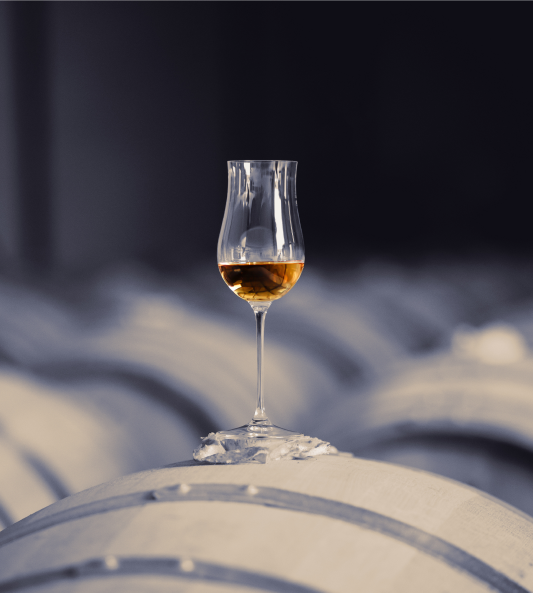

<!-- ==========================================================================
   SECTION ESPRIT DU TEMPS — MAISON LHERAUD
   ========================================================================== -->
<section id="esprit" class="esprit">
    <div class="esprit__container">
        <!-- Left Column: Image with offset gold lines -->
        <div class="esprit__image-col">
            <div class="esprit__image-wrapper">
                
            </div>
        </div>

        <!-- Right Column: Text Content -->
        <div class="esprit__text-col">
            <!-- Category header -->
            <div class="esprit__category-container">
                <span class="esprit__category">NOTRE HISTOIRE</span>
                <span class="esprit__category-line"></span>
            </div>

            <!-- Title -->
            <div class="esprit__title">
                <h3 class="esprit__title-main">L'ESPRIT</h3>
                <h2 class="esprit__title-sub">du temps</h2>
            </div>

            <!-- Description paragraphs -->
            <div class="esprit__desc">
                <p class="esprit__para-bold">Depuis plus de trois siècles, Lheraud cultive un art rare :<br>Celui de transformer la terre, le feu et le temps en émotions.</p>
                <p class="esprit__para-regular">Née en 1680 sur le domaine de Lasdoux, en Charente, cette maison familiale indépendante a bâti sa réputation sur un savoir-faire de création d'eaux-de-vie d'exception, transmis sans interruption.</p>
                <p class="esprit__highlight-gold">COGNAC, ARMAGNAC, PINEAU DES CHARENTES & WHISKY FRANÇAIS.</p>
                <p class="esprit__para-regular">Chaque création puise sa force dans le même socle : la maîtrise du geste, la patience de l'élevage, la fidélité au terroir et la liberté d'esprit.</p>
                <p class="esprit__para-regular">Dans un monde pressé, Lheraud continue d'avancer, toujours avec son temps.</p>
            </div>

            <!-- Underlined Button (same as hero CTA) -->
            <div class="esprit__actions">
                <a href="#collections" class="btn btn--underline">DÉCOUVRIR L'HISTOIRE</a>
            </div>
        </div>
    </div>
</section>
